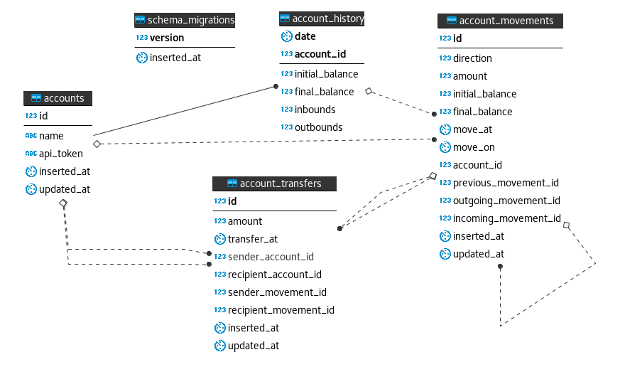

DataBase
As part of our umbrella stack there’s the :database application, which provides high level interaction for all resources and its services.
The main interested in those abstractions is the :teller application.
Decimals
You may note we do abstract money with Decimal instead of using integers. I was eager to test a implementation with decimals so I found this project as a great opportunity.
We also work with 4 decimal places, Eg.: Instead of 99.99, it’s 99.9900. As a bank may be useful to do so once we can perform micro charges and precise currency exchanges. But you can indeed input values with any number of decimal places, only 4 will be kept.
Besides that all our transactions, either for debit or credit, are computed as positive values.
See DataBase.Schemas.AccountMovement.
Entity Relationship Diagram

Local Errors
While interacting with our GraphQL API, although unexpected, some :database errors can drain into your results.
Those are the following:
:failed_withdraw_performance:failed_transfer_performance:failed_open_performance:database_failure
They represent internal malfunction and that’s why they don’t belong to the API set of errors.